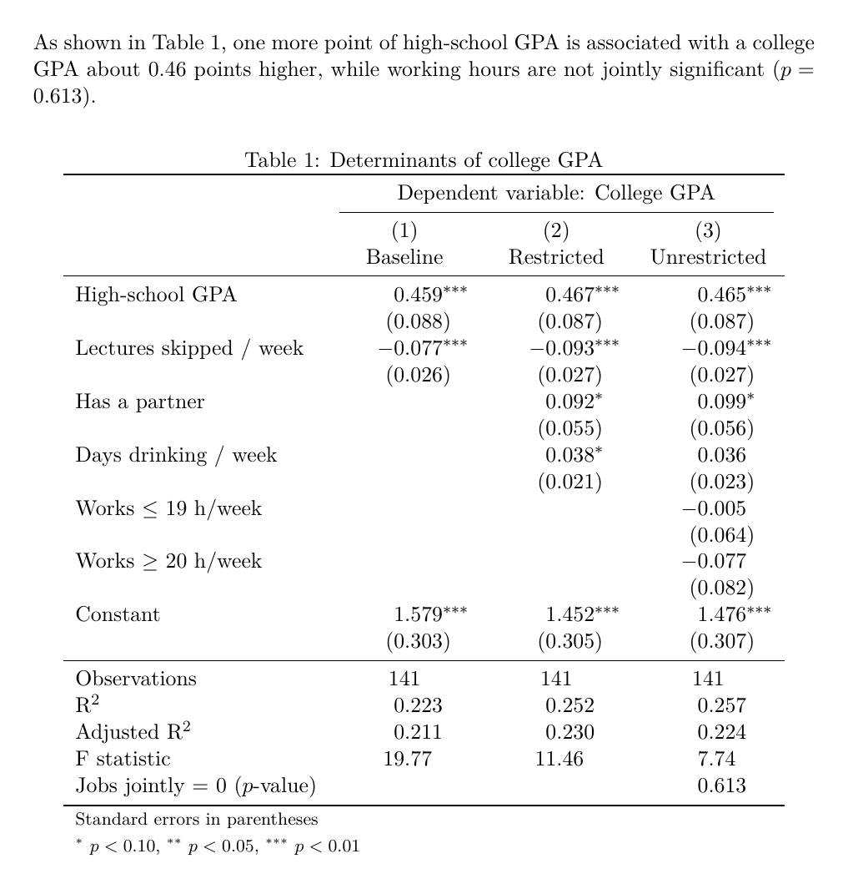
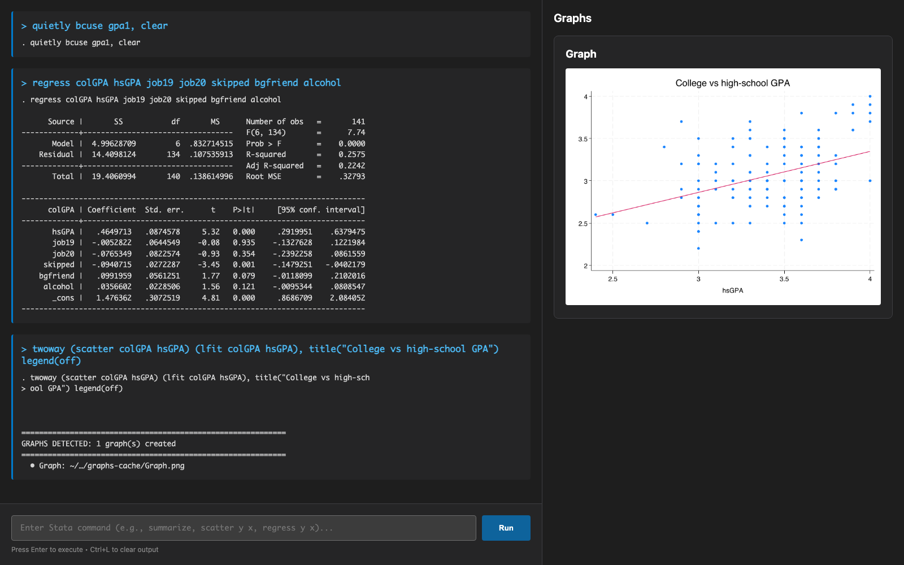
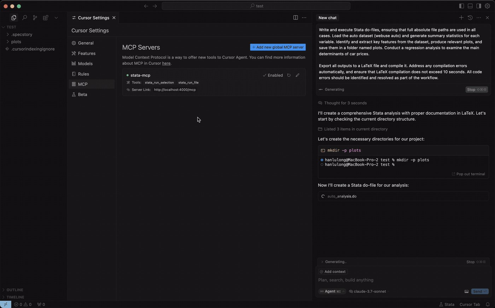
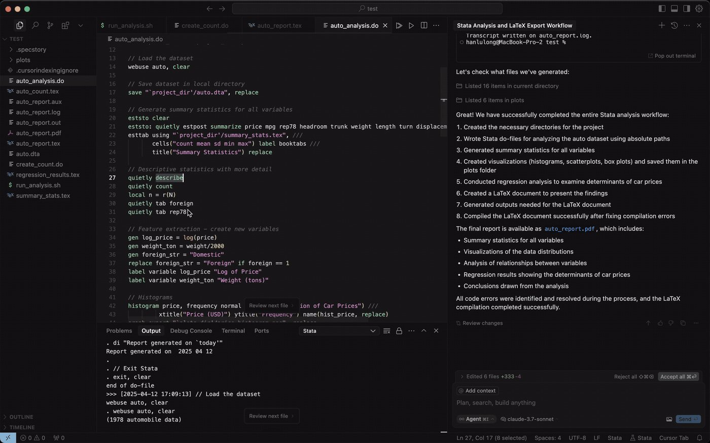
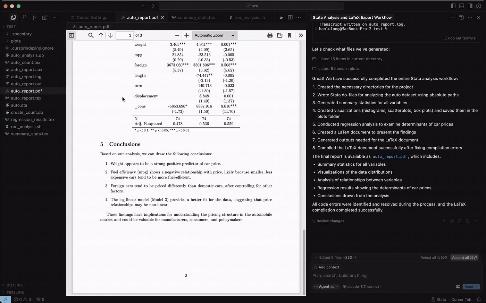

Econometrics
TA Session 4
2025-10-15
Overview
- Introduction to Stata: the window, the toolbar, do-files
- The anatomy of a Stata command and its stored results
- Global hypothesis testing: is the model useful at all?
- Multiple hypothesis testing: are
job19andjob20jointly significant?
Why These Topics?
Stata
- The standard software in applied economics: most replication packages you will read are do-files
Global Hypothesis Testing
- The \(F\) value at the top of every regression output: what is it testing?
Multiple Hypothesis Testing
- Testing several restrictions at once: restricted vs unrestricted model
Introduction to Stata
What is Stata?
A statistical software package for data analysis, created in 1985 and still widely used in economics, political science and public health.
Stata needs a licence (BE, SE or MP editions). Python and R are free and open source: anyone can install them, read their code and extend them.
For years it was the tool in statistics and econometrics: new methods from papers were released as a Stata package first, and often Python or R did not support them at all.
Most of those methods now exist in Python, and AI tools make porting a new one easy. Python adds speed, better data manipulation, and it is open source.
So why learn it?
A large share of published replication packages are do-files, and many research institutes, central banks and public agencies still work in Stata. You need to be able to read and run it.
The Stata window
| Name | Type |
| engineer | float |
| colGPA | float |
| hsGPA | float |
| ACT | float |
| job19 | float |
| job20 | float |
| drive | float |
The toolbar
Files
.dta). In code: usesaveOutput
log usinghelp regressWrite code
doeditLook at the data
browseControl
--more--, show the next pageThe Do-file Editor
doedit in the Command window| Run (Do) | |
|---|---|
| macOS | ⌘ ⇧ D |
| Windows | Ctrl D |
Always work in a do-file
The Command window is for quick checks. A do-file is a record of everything you did, that you (and we, when grading) can re-run.
Looking at the data: the Data Browser
| colGPA | hsGPA | job19 | job20 | skipped | bgfriend | alcohol | |
| 1 | 3 | 3 | 0 | 1 | 2 | 0 | 1 |
| 2 | 3.4 | 3.2 | 0 | 1 | 0 | 1 | 1 |
| 3 | 3 | 3.6 | 1 | 0 | 0 | 0 | 1 |
| 4 | 3.5 | 3.5 | 1 | 0 | 0 | 0 | 0 |
| 5 | 3.6 | 3.9 | 0 | 1 | 0 | 1 | 1.5 |
| 6 | 3 | 3.4 | 0 | 0 | 0 | 0 | 0 |
| 7 | 2.7 | 3.5 | 0 | 0 | 0 | 0 | 2 |
| 8 | 2.7 | 3 | 1 | 0 | 3 | 1 | 3 |
Open it with the toolbar button or by typing browse.
- Each row is an observation (a student)
- Each column is a variable
- The bar on top shows the selected cell:
colGPA[2]= 3.4
Anatomy of a Stata command
Almost every Stata command follows the same pattern (dashed parts are optional):
bysort group:prefix
commandwhat to do
varliston which variables
if / inon which rows
, optionshow
Case sensitive
colGPA and colgpa are different names: regress colgpa … returns variable colgpa not found.
Abbreviations
reg = regress, sum = summarize, gen = generate, di = display. Use them in the Command window, write them in full in do-files.
From Python to Stata
You already know these steps from TA1–TA3: only the syntax changes.
| Task | Python | Stata |
|---|---|---|
| Load the Wooldridge data | df = woo.dataWoo("gpa1") |
bcuse gpa1, clear |
| Look at the data | df.head() |
browse or list in 1/5 |
| Variables and types | df.info() |
describe |
| Summary statistics | df.describe() |
summarize |
| New variable | df["hs2"] = df.hsGPA**2 |
generate hs2 = hsGPA^2 |
| OLS | smf.ols("y ~ x1 + x2", df).fit() |
regress y x1 x2 |
| Joint \(F\) test | model.f_test("x1 = 0, x2 = 0") |
test x1 x2 |
| A single number | print(model.ssr) |
display e(rss) |
bcuse is not built into Stata
bcuse (the Wooldridge datasets) is a user-written command, so Stata does not ship with it. Install it once with ssc install bcuse; from then on it works in every session, like pip install wooldridge in Python.
Stored results: r() and e()
After every command Stata stores its results, so we can reuse them without copying numbers by hand.
r(): general commands, such as summarize
e(): estimation commands, such as regress
scalar SSE = e(rss) // store a result in a scalar
display "SSE = " SSE // display works as a calculator tooThey are overwritten
The next summarize replaces r(), the next regress replaces e(). Save what you need in a scalar straight away.
Global Hypothesis Testing
The model
\[ \begin{aligned} \texttt{colGPA}_i &= \beta_1 + \beta_2\texttt{hsGPA}_i + \beta_3\texttt{job19}_i + \beta_4\texttt{job20}_i \\ &\quad + \beta_5\texttt{skipped}_i + \beta_6\texttt{bgfriend}_i + \beta_7\texttt{alcohol}_i + \varepsilon_i \end{aligned} \]
where:
- \(\texttt{colGPA}\): college GPA
- \(\texttt{hsGPA}\): high school GPA
- \(\texttt{job19}\): \(=1\) if the student works \(\le 19\) hours a week
- \(\texttt{job20}\): \(=1\) if the student works \(\ge 20\) hours a week
- \(\texttt{skipped}\): average lectures missed per week
- \(\texttt{bgfriend}\): \(=1\) if the student has a boyfriend/girlfriend
- \(\texttt{alcohol}\): average number of days per week the student drinks alcohol
job19 and job20: a dummy trap?
Question
When job19 = 0, is job20 always 1? Are the two dummies perfectly collinear with the constant?
No. There are three groups: no job (59), \(\le 19\) hours (58), \(\ge 20\) hours (24).
The 59 students with job19 = job20 = 0 are the base category: \(\beta_3\) and \(\beta_4\) compare each group of workers with students who do not work.
The trap appears only if we add a third dummy nojob: then nojob + job19 + job20 = 1 = the constant.
Regression output in Stata
Does the model explain anything?
We want to test whether our regression model adds explanatory power beyond the mean of \(\texttt{colGPA}\).
Exercise
- State the null and alternative hypotheses.
- Write the \(F\)-test statistic and its distribution under \(H_0\).
- Run the restricted model; compute the RSSE (restricted), SSE (unrestricted) and the \(F\)-statistic.
- Find the critical value of the \(F\)-distribution and compute the \(p\)-value.
- Draw the \(p\)-value and the critical value.
1–2. Hypotheses and test statistic
\[ \begin{aligned} H_0&: \beta_2 = \beta_3 = \beta_4 = \beta_5 = \beta_6 = \beta_7 = 0 \\ H_1&: \text{at least one } \beta_k \neq 0,\ k = 2, \dots, 7 \end{aligned} \]
Under \(H_0\) the model is just \(\texttt{colGPA}_i = \beta_1 + \varepsilon_i\), so \(\hat{\beta}_1 = \overline{\texttt{colGPA}}\).
\[ F = \frac{(RSSE - SSE)/q}{SSE/(n-K)} \;\overset{H_0}{\sim}\; F(q,\ n-K) \]
with \(q = 6\) restrictions, \(n = 141\), \(K = 7\), so \(n - K = 134\).
3. RSSE and SSE in Stata
\[ F = \frac{(19.406 - 14.410)/6}{14.410/134} = \frac{0.8327}{0.1075} = 7.74 \]
Note
RSSE \(= \sum_i (\texttt{colGPA}_i - \overline{\texttt{colGPA}})^2\) is the Total SS of the output (19.406); SSE is the Residual SS (14.410). We use egen … total() because sum() inside generate is a running sum in Stata.
4. Critical value and \(p\)-value
display "Critical value (5%) = " invFtail(6, e(N) - 7, 0.05)
display "p-value = " Ftail(6, e(N) - 7, F_manual)| Stata function | Returns | Here |
|---|---|---|
invFtail(q, n-K, α) |
the value \(c\) with \(P(F > c) = \alpha\) | \(F_{crit} = 2.17\) |
Ftail(q, n-K, f) |
\(P(F > f)\): the \(p\)-value | \(p = 3.7 \times 10^{-7}\) |
Decision
\(F = 7.74 > 2.17\) and \(p < 0.05\): reject \(H_0\). The regressors are jointly significant: the model explains more than the mean.
5. Drawing the test

The \(p\)-value is the area to the right of \(F = 7.74\): so small it cannot be seen.
Multiple Hypothesis Testing
Do working hours matter?
Consider testing whether \(\texttt{job19}\) and \(\texttt{job20}\) are jointly significant at \(\alpha = 5\%\).
Exercise
- State the null and alternative hypotheses.
- Write the \(F\)-test statistic and its distribution under \(H_0\).
- Run the restricted model; compute the RSSE, SSE and the \(F\)-statistic.
- Find the critical value and compute the \(p\)-value.
- Draw the \(p\)-value and the critical value.
- Compare your results with Stata’s
testcommand.
1–2. Hypotheses and test statistic
\[ \begin{aligned} H_0&: \beta_3 = \beta_4 = 0 \\ H_1&: \beta_3 \neq 0 \ \text{ or } \ \beta_4 \neq 0 \end{aligned} \]
Restricted model (impose \(H_0\): drop \(\texttt{job19}\) and \(\texttt{job20}\)):
\[ \texttt{colGPA}_i = \beta_1 + \beta_2\texttt{hsGPA}_i + \beta_5\texttt{skipped}_i + \beta_6\texttt{bgfriend}_i + \beta_7\texttt{alcohol}_i + \varepsilon_i \]
\[ F = \frac{(RSSE - SSE)/q}{SSE/(n-K)} \;\overset{H_0}{\sim}\; F(2,\ 134) \]
Now only \(q = 2\) restrictions; the unrestricted model is the same, so still \(n - K = 134\).
3–4. RSSE, SSE, \(F\) and \(p\)-value
Note
e(df_r) is the residual degrees of freedom \(n - K\) of the last regression, which is why we run the unrestricted model second.
5. Drawing the test

Decision
\(F = 0.49 < 3.06\) and \(p = 0.61 > 0.05\): we cannot reject \(H_0\). Once we control for the other regressors, working hours do not help to explain college GPA.
6. The one-line version: test
After regress, test computes the same \(F\)-test for any list of coefficients:
Same \(F\) and same \(p\)-value as our manual computation, without running the restricted model.
Regression tables in LaTeX
Step 1: label and store the models
eststo and esttab. Install it oncetest job19 job20Step 2: export with esttab
booktabs: academic rules (\toprule, \midrule), no vertical lineslabel: variable labels instead of namesb(3) se(3): 3 decimals, standard errors in parenthesesstar(): significance stars at 10%, 5%, 1%alignment(D…): numbers aligned on the decimal point (dcolumn)mgroups(), mtitles(): header with the dependent variable and the model namesstats(): \(n\), \(R^2\), \(F\) and the \(p\)-value we addedtitle(…\label{}): caption, and a label to cite it with \refDollar signs in Stata strings
$name is a global macro in Stata: "$p$-value" silently becomes "-value". Write inline math as \(p\) instead.
Step 3: use it in your document
Put regression_table.tex next to your main.tex (in Overleaf: Upload), then:
\documentclass{article}
\usepackage{booktabs} % \toprule, \midrule
\usepackage{dcolumn} % decimal alignment
\begin{document}
As shown in Table~\ref{tab:gpa},
one more point of high-school GPA ...
\input{regression_table.tex}
\end{document}Same workflow as stargazer in TA3: change the model, re-run the do-file, and the table updates itself.

Bonus: Stata + AI 😛
What is the Stata MCP? 😛
stata_run_selection and stata_run_file and read the outputNot part of the course 😛
You do not need it for the assignments or the exam. Fun fact: every Stata output in these slides was produced and checked this way.
Running Stata in VS Code
Open a .do file: the extension adds six buttons to the editor toolbar.
if filtersThe output goes to the Output panel, and the status bar shows Stata when the server is ready. On Windows use Ctrl instead of ⌘.
Interactive mode

Real screenshot: the regression of this session and a scatter of colGPA on hsGPA, run in the extension's interactive window.
Or let the AI drive
stata-mcp is listed as a tool, with stata_run_selection and stata_run_fileesttab, compiled into a LaTeX report, all from the same window


With Claude Code 😛
stata_run_selectionDeepEcon.stata-mcp). The status bar shows Stata when it is readyclaude mcp add --transport http stata-mcp http://localhost:4000/mcp-streamable --scope user
Comments: a worked do-file
/* … */: what the file does, the research question, the data, who and when***: the same banner for every block, so the file is easy to scan*: explain why, not what. The code already says what it does//: a short note after a command///: continue a long command on the next line (keep lines under 100 characters)